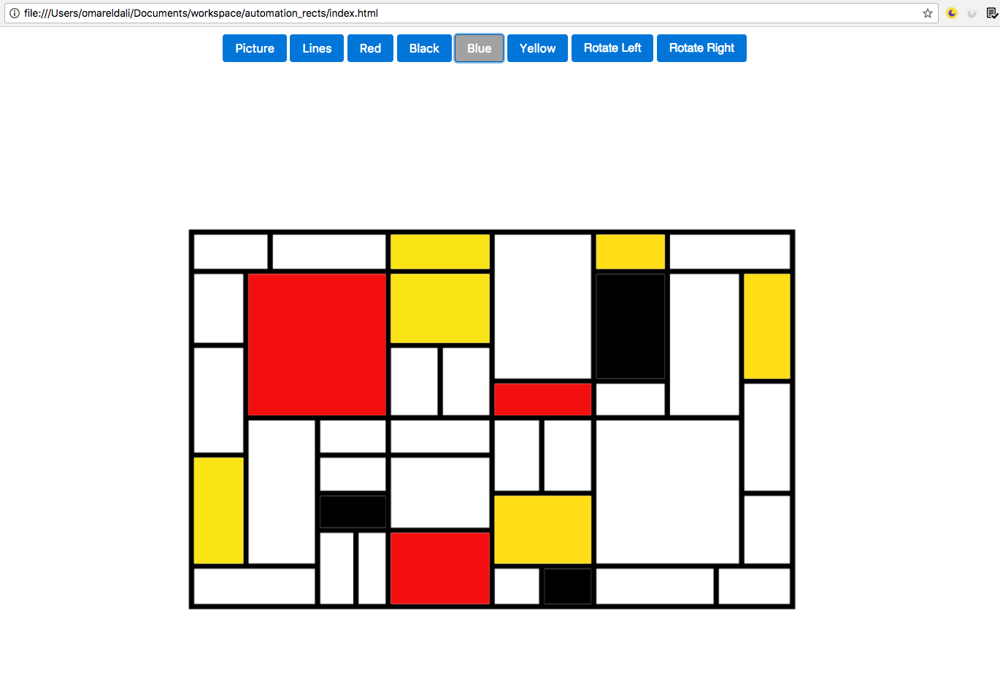

We’re technology pragmatic, which means we like to go with whatever is the best tool for the job.
Scenario: See picture Given i am on the Testclub website And i am on the Automation page When i opt to see the picture Then i see the picture
Scenario: Toggle lines off Given i am on the automation page And i can see the picture When i toggle lines off Then i dont see any lines
Scenario: Toggle lines on Given i am on the automation page And i can see the picture And lines are off When i toggle lines on Then i see the lines
Scenario outline: Toggle rectangles
Given i am on the Testclub website
And i am on the automation page
And i see the picture
And i put the
Examples: | link_colour | rect_colour | | black | black | | red | red | | blue | blue | | yellow | yellow |
Scenario outline: Rotate picture
Given i am on the Testclub website
And i am on the automation page
And i see the picture
When i click the
| rotation_direction | | left | | left | | right | | right | | right |
